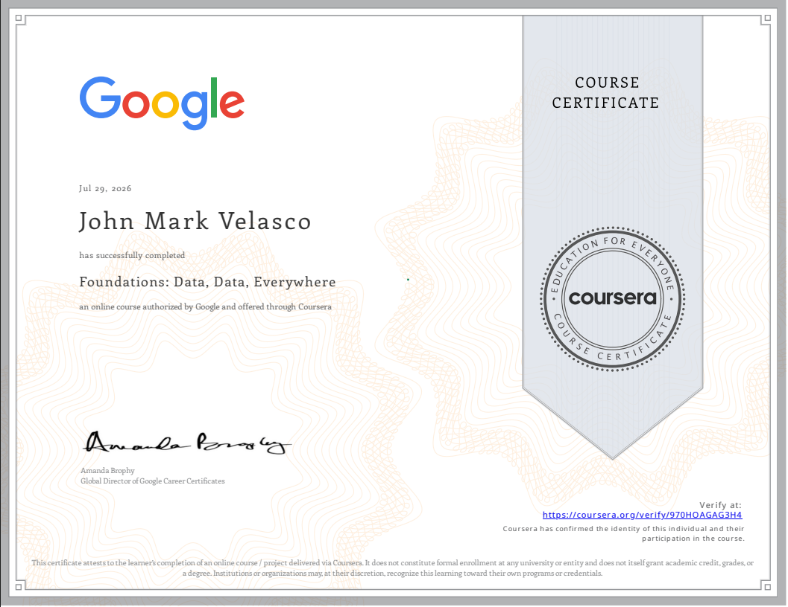
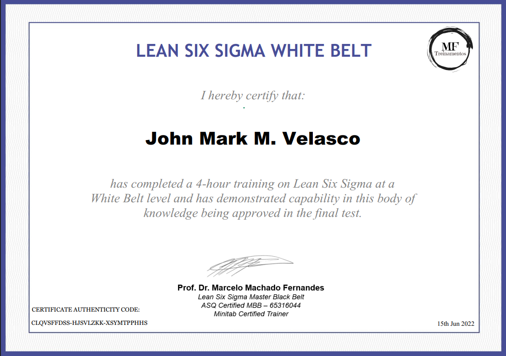

Accurate books, reconciled and ready for month-end.
I'm John Mark Velasco, a bookkeeper. I use QuickBooks Online and Google Sheets to categorize transactions, reconcile accounts, track expenses and prepare clear monthly reports.
- Looking for
- Bookkeeping role
- Tools
- QuickBooks Online, Google Sheets
- Core tasks
- Categorization, reconciliations, expense tracking, monthly reporting
- Certificates
- Bookkeeping Basics (Intuit), Foundations: Data, Data, Everywhere (Google), Lean Six Sigma White Belt
- Experience
- Practice projects built with fictional data, shown below
What I can help with
The day-to-day work that keeps a small business's books current and easy to review.
Transaction categorization
Review bank and card feeds, assign accounts consistently, and flag anything unclear instead of guessing.
Bank and card reconciliations
Match cleared items to each statement and track down differences until the balance ties out.
Expense tracking
Log expenses by vendor, category and payment method, with receipts matched to each line.
Financial reporting
Prepare a monthly P&L summary with month-over-month changes and short notes on what moved.
Basic automation
Set up bank rules, recurring transactions and spreadsheet formulas that cut repetitive entry.
Operations support
Keep shared files, checklists and vendor records organized so month-end runs the same way every time.
Tools
Certificates


Three practice projects
These are illustrative exercises, not client work. The businesses and numbers are fictional, but the workflows are the ones I'd follow on the job. Open any project in the viewer to click through it.
Careful, organized, easy to follow
Accuracy
I tie every account back to a source document: bank statements, receipts, payroll reports. A reconciliation is done at $0.00, not close to it.
- Reconcile monthly, not at year-end
- Flag unclear items rather than guess
Organization
One naming system, one chart of accounts and the same checklist each month, so anyone can pick up where I left off.
- Receipts stored with the transaction
- Month-end steps written down
Communication
When something doesn’t match, I say what I found, what I checked and what I need from you, in one list.
- Weekly questions list, not scattered messages
- Reports sent with short, plain notes